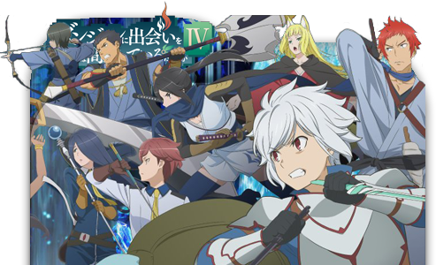
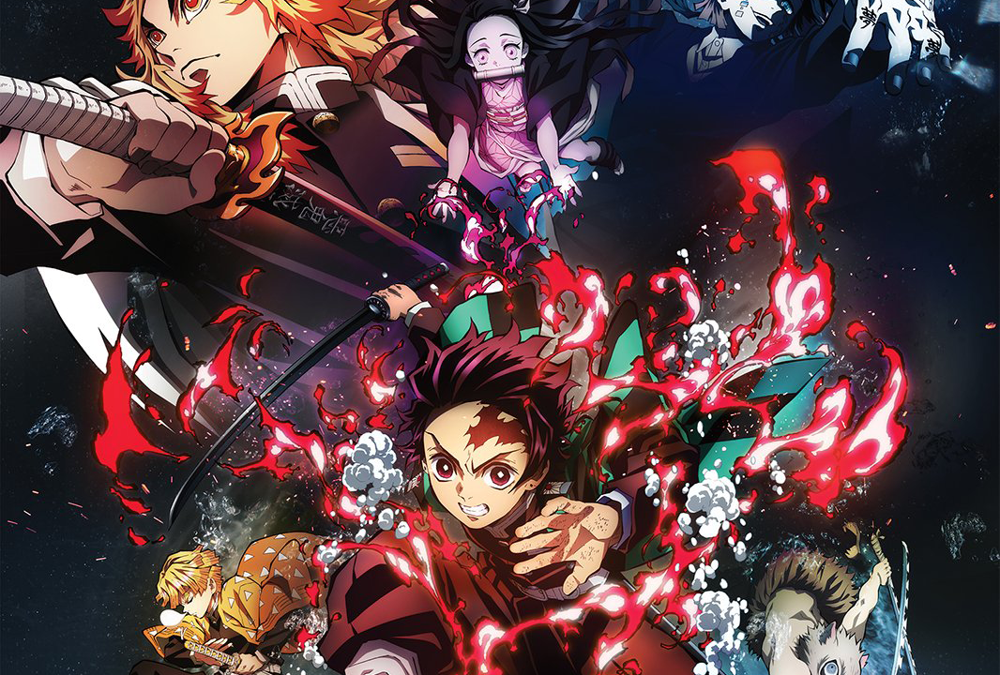
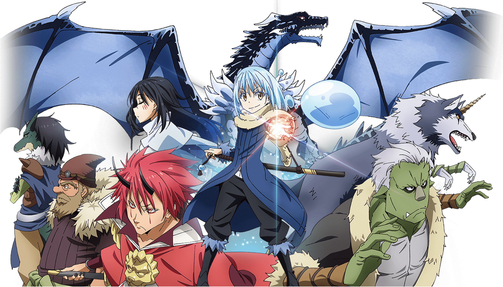

|  |  |
|
DanMachi (Is it wrong to pick up girls in a dungeon?) |
Kimetsu no Yaiba (Demon Slayer) |
|
Life in the bustling city of Orario is never dull, especially for Bell Cranel, a naïve young man who hopes to become the greatest adventurer in the land. After a chance encounter with the lonely goddess, Hestia, his dreams become a little closer to reality. With her support, Bell embarks on a fantastic quest as he ventures deep within the city's monster-filled catacombs, known only as the "Dungeon." Death lurks around every corner in the cavernous depths of this terrifying labyrinth, and a mysterious power moves amidst the shadows. Even on the surface, survival is a hard-earned privilege. Indeed, nothing is ever certain in a world where gods and humans live and work together, especially when they often struggle to get along. One thing is for sure, though: a myriad of blunders, triumphs and friendships awaits the dauntlessly optimistic protagonist of this herculean tale. |
Ever since the death of his father, the burden of supporting the family has fallen upon Tanjirou Kamado's shoulders. Though living impoverished on a remote mountain, the Kamado family are able to enjoy a relatively peaceful and happy life. One day, Tanjirou decides to go down to the local village to make a little money selling charcoal. On his way back, night falls, forcing Tanjirou to take shelter in the house of a strange man, who warns him of the existence of flesh-eating demons that lurk in the woods at night. When he finally arrives back home the next day, he is met with a horrifying sight—his whole family has been slaughtered. Worse still, the sole survivor is his sister Nezuko, who has been turned into a bloodthirsty demon. Consumed by rage and hatred, Tanjirou swears to avenge his family and stay by his only remaining sibling. Alongside the mysterious group calling themselves the Demon Slayer Corps, Tanjirou will do whatever it takes to slay the demons and protect the remnants of his beloved sister's humanity. |

|
 |
|
Black Clover |
Tensei shitara Slime Datta Ken (That Time I Got Reincarnated as a Slime) |
|
Asta and Yuno were abandoned at the same church on the same day. Raised together as children, they came to know of the "Wizard King"—a title given to the strongest mage in the kingdom—and promised that they would compete against each other for the position of the next Wizard King. However, as they grew up, the stark difference between them became evident. While Yuno is able to wield magic with amazing power and control, Asta cannot use magic at all and desperately tries to awaken his powers by training physically. When they reach the age of 15, Yuno is bestowed a spectacular Grimoire with a four-leaf clover, while Asta receives nothing. However, soon after, Yuno is attacked by a person named Lebuty, whose main purpose is to obtain Yuno's Grimoire. Asta tries to fight Lebuty, but he is outmatched. Though without hope and on the brink of defeat, he finds the strength to continue when he hears Yuno's voice. Unleashing his inner emotions in a rage, Asta receives a five-leaf clover Grimoire, a "Black Clover" giving him enough power to defeat Lebuty. A few days later, the two friends head out into the world, both seeking the same goal—to become the Wizard King! |
Thirty-seven-year-old Satoru Mikami is a typical corporate worker, who is perfectly content with his monotonous lifestyle in Tokyo, other than failing to nail down a girlfriend even once throughout his life. In the midst of a casual encounter with his colleague, he falls victim to a random assailant on the streets and is stabbed. However, while succumbing to his injuries, a peculiar voice echoes in his mind, and recites a bunch of commands which the dying man cannot make sense of. When Satoru regains consciousness, he discovers that he has reincarnated as a goop of slime in an unfamiliar realm. In doing so, he acquires newfound skills—notably, the power to devour anything and mimic its appearance and abilities. He then stumbles upon the sealed Catastrophe-level monster "Storm Dragon" Veldora who had been sealed away for the past 300 years for devastating a town to ashes. Sympathetic to his predicament, Satoru befriends him, promising to assist in destroying the seal. In return, Veldora bestows upon him the name Rimuru Tempest to grant him divine protection. Now, liberated from the mundanities of his past life, Rimuru embarks on a fresh journey with a distinct goal in mind. As he grows accustomed to his new physique, his gooey antics ripple throughout the world, gradually altering his fate. |